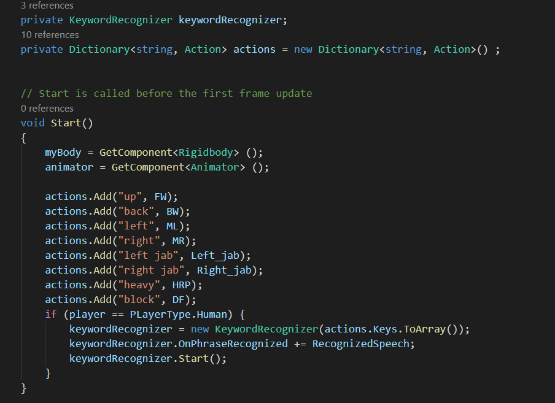

Game architecture
Boom Boxing is developed by Unity. We also using Github to port for any code changing. This game using provided component-based architecture from Unity.

As implemented in the figure, each game object is attract to multiple components to setup its size (Renderer), how it transform by actions from the input (Transform), its hitbox(Rigid Body), where is it standing in between other object and last of all its behavior based on the mechanics we defined before (Mono Behavior).
Character & Game design
How Boom Boxing recognize word?
Voice control is the core of this project, since the original scope of this project is to have the game that can be controlled with player voice. Normally, the input system of Unity is from keyboard and mouse for computer games, for mobile games, we have the hand gesture and the input from the screen. There are games that allow player to play with voice, but to be more accurate, it is more like a pitch recognition instead of voice recognition.
For this project, our goal is to have the game listened to player instructions (words and phrase). Since there are no prebuilt function in Unity to recognize word, but we can still find a class from unity documents, which named keywordrecognizer, this class allows developers to make the game listen and recognize the key word or phrase that has been set up.
There are other ways we find out to be possible for voice recognition such as calling API from big data, but doing this will require to pay money. As a result, keywordrecognizer are picked to be our core function in this game.
To be more specific, keywordrecognizer is a class in UnityEngine.Windows.Speech that listens to speech input and attempts to match uttered phrases to a list of registered keywords.
There can be many keyword recognizers active at any given time, but no two keyword recognizers may be listening for the same keyword. This result in many constraints to our project since there have to be many modifications in the code of the game in order to keep 2 keywordrecognizers from having the same key words.
How do we apply keywordrecognizer in our project?
This is the example of running keywordrecognizer taken directly from Unity documentation. From the example, both keyword and phrase are listened. But in the scope of our project, there are only keywords that need to be recognize. In our project, the code is written directly to the character prefabricated controller, the idea is amazingly simple, if the word is recognized, trigger the action (if keyword is “punch”, then trigger action punch from character animation controller).
There are many constraints that we have gotten from using keywordrecognizer, as mentioned earlier, the 2 keyword recognizers cannot listen to the same keyword. Which do not allow the offline mode and online mode to be controlled with the same keyword set. As a solution for this problem. We have prepared 3 set of keywords which have the same meaning as of the moving instructions. 1 will be used for the offline mode and other will be used randomly for 2 players in multiplayer modes. By doing this, we are expecting the player not to have any advantage against other when it comes to multiplayer mode.
Keywordrecognizer might not be the best option for this project, but as in the scope of the project, all the function are except able. We will keep working on the voice recognition in the future to find a better solution for this voice control problem, or produce our own class or code to recognize player voice input.